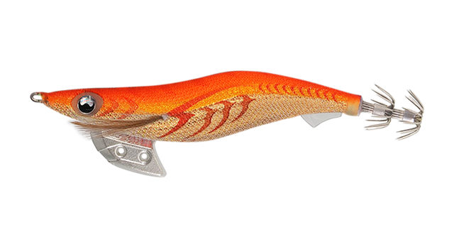
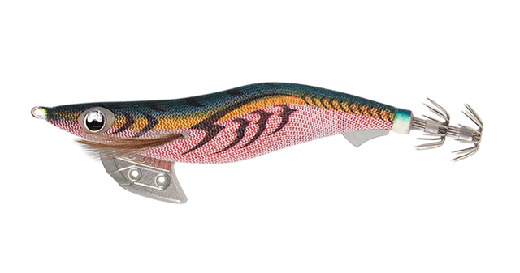
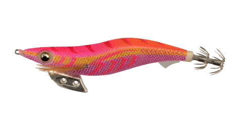
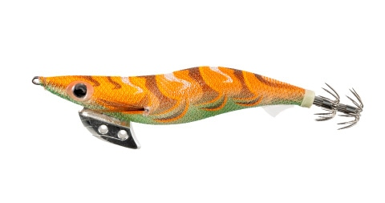

エギ王K
（EGI-OH K）
エギ王KはYAMASHITA（ヤマシタ）のエギです。
エギングブームで高まるプレッシャーと、抱ききらないスレイカの増加に対応するために生まれた「低活性イカ攻略モデル」。風や波の影響を受けにくい安定した乗せのフォールと、必要以上にダートしすぎないアクションで、低活性なイカが好む動きに仕上げられています。

画像出典:ヤマシタ公式HP
スペック
- メーカー
- YAMASHITA（ヤマシタ）
- タイプ
- エギ（ベーシック）
- サイズ
- 2.5号／3号／3.5号／4号
- 全長
- 75mm／90mm／105mm／120mm
- 重さ
- 11g／16g／22g／26g
- 沈下速度
- 約5秒/m（2.5号）／約3秒/m（3〜4号）
- ターゲット
- アオリイカ
▼今すぐチェック

エギ王Kの特徴
ブレない安定したフォールで、低活性のイカに抱かせる
-
ハイドロフィンで真っすぐ沈む
ベリー後方の透明な突起「ハイドロフィン」が船の舵のような役割を果たし、フォール中のブレを徹底的に排除。強風や高波でラインが流される日でも、海の中では真っすぐ沈んでいきます。
-
ダートしすぎないアクション
低活性なイカが嫌う大きすぎるダートを抑え、イカに警戒心を抱かせません。上下方向もレンジを外しにくい設定で、イカがエギを追いやすくなっています。
-
490グローのハイドロアイと段差フック
イカが最も感知しやすい490nmで光る「490グローエッジ」の目玉がワンポイントでアピール。開き角度の違う段差フック「コンビファインフック」で、繊細なバイトもフッキングに持ち込めます。
エギ王Kの使い方
基本はシャクリとフォールの繰り返し。2〜3回シャクってダートさせたら、ラインを張ってフォールさせ、フォール中のアタリを待ちます。
エギ王Kはフォールが安定しているので、フォールの時間をしっかり取るのがコツ。反応が渋いときはシャクリを小さくして、ダートを控えめにしましょう。
エギ王Kの得意な状況
プレッシャーの高い人気ポイントや、スレたアオリイカが多いとき。風や波があってエギの姿勢が崩れやすい日にも、安定したフォールで抱かせる間を作れます。
ワンポイント
シンカーに糸オモリを巻いてディープに、穴を広げてシャローにと、チューニングも簡単です。浅場ではシャロー・スーパーシャロー、深場ではディープと、同じエギ王Kのタイプ違いで持ち替えるのもおすすめです。
サイズの使い分け
| サイズ | 全長／重さ | 沈下速度 |
|---|---|---|
| 2.5号 | 75mm／11g | 約5秒/m。秋の新子シーズンや小型のイカに |
| 3号 | 90mm／16g | 約3秒/m。秋〜冬の基準サイズ |
| 3.5号 | 105mm／22g | 約3秒/m。春の大型狙いや深めのポイントに |
| 4号 | 120mm／26g | 約3秒/m。春の大型アオリイカ狙いに |
エギ王Kには、同じボディで沈下速度の違うシャロー（3.5号で約6秒/m）・スーパーシャロー（約8秒/m）・ディープもあります。水深と潮の速さでタイプを選びましょう。
オススメカラー
公式ラインナップから4色を紹介します（カラー名は公式の表記のまま）。

002 キャロットゴールドオレンジと金ボディで濁り潮に強い王道カラー。視認性も良く、マヅメにも使いやすい。

006 軍艦グリーン緑と赤のコントラストがイカの視覚を刺激するカラー。釣りきれていなかったスレイカに。

081 トラトラピンキーピンク系の背色が目立つカラー。視認性を確保しながらアピールしたいときに。

093 マッドハンター濁り潮を意識したカラー。雨後や底荒れで水が濁ったときに。
画像出典:ヤマシタ公式HP
エギ王Kに似ているルアー
-
 エギ王Kディープ
ヤマシタ
詳細はこちら＞
エギ王Kディープ
ヤマシタ
詳細はこちら＞
同じエギ王Kのディープタイプ。深場や潮の速い場所、風が強い日に。
-
 エギ王LIVE
ヤマシタ
詳細はこちら＞
エギ王LIVE
ヤマシタ
詳細はこちら＞
誰でもキレのあるダートが出せる軽快ダートモデル。活性の高いイカをダートで誘いたいときに。
-
 エギ政 改
DUO
詳細はこちら＞
エギ政 改
DUO
詳細はこちら＞
3号・16gのエギ。他メーカーのエギでローテーションしたいときに。